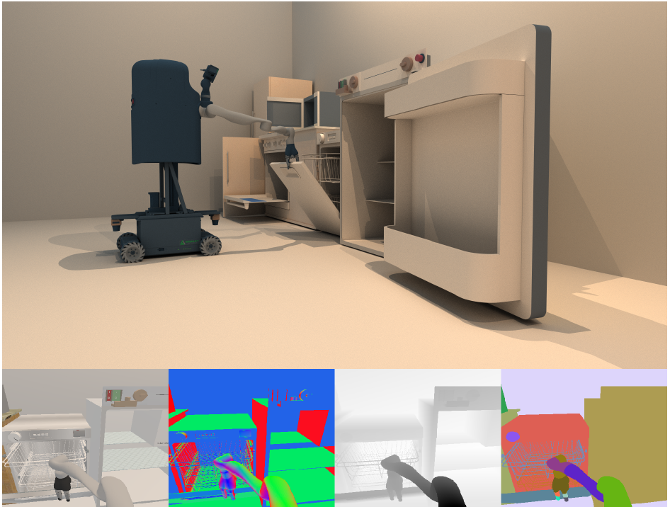

I am currently a visiting student student at UC Berkeley seeking a collaborative team to build with and learn from. I will receive my bachelors at school of science, Xidian University, where I was advised by Prof. Hao Dong and Prof. Tom Luan.
I am interested in combining mathematics with other fields to solve real-world problems.
Contact: kouwenbocn [at] berkeley.edu. My CV can be found here.
Education

University of California, Berkeley
Jan. 2021 - Dec. 2021visiting student in EECS
Xidian University
Sep. 2018 - Jun. 2022B.S. in Applied Mathematics
Publications
|  |
A mixed wavelet-learning method of predicting macroscopic
effective heat transfer conductivities of braided composite
materials
Hao Dong,
Wenbo Kou,
Junyan Han, Jiale Linghua, Minqiang Zou, Cui, Junzhi.
Communications in Computational Physics (In Progress)
In this paper, a novel hybrid
wavelet-learning method is developed for predicting macroscopic effective
heat transfer conductivities of braided composite materials with heterogeneous thermal conductivity.
|
{kind=link}

|
Hao Dong, Yufeng Nie, Junzhi Cui,
Wenbo Kou,
Minqiang Zou, Junyan Han, Xiaofei Guan, Zihao Yang.
Computer Methods in Applied Mechanics and Engineering, 2021, 374: 113591
For the effective prediction of the physical parameters of random composite materials, a wavelet-machine learning hybrid method with high precision, high efficiency prediction ability and excellent anti-noise performance has been developed.
|

|
Wenbo Kou,
Dong Hao, Zou Min-Qiang, Han Jun-Yan, Jia Xi-Xi.
ACTA PHYSICA SINICA, 2021, 70(3): 030701.
An innovative hybrid wavelet-based learning method assisted multiscale analysis is developed to predict the effective thermal conductivities of hybrid composite materials with heterogeneous conductivity by the asymptotic homogenization method, wavelet transform method, and machine learning method.
|
Course Projects
|
|
CS61B Data Structures(Spring 2021) video In this project, I create an engine for generating explorable worlds and interesting game mechanics. |